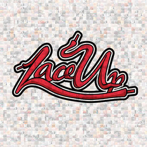

Machine Gun Kelly
A tribute page to the one who made feel
Time-Line
- 22th april of 1990: Colson Baker was born in Houston, Texas.
- Agust 2012: Baker self-released a mixtape titled EST 4 Life.
- October 2012: Lace Up album was released
- June 2012: Black Flag mixtape was released
- July 2015: Fuck It mixtape was released
- October 2015: General Admission album was released
- May 2017: Bloom album was released
- July 2019: Hotel Diablo album was released
- September 2020: Tickets to My Downfall album was released
 Tickets to My Downfall
Tickets to My Downfall
 Hotel Diablo
Hotel Diablo
 Bloom
Bloom
General Admission

Lace Up
I don’t think that a lot of people understand, that the person who’s crazy enough to think he can change the world, actually can.